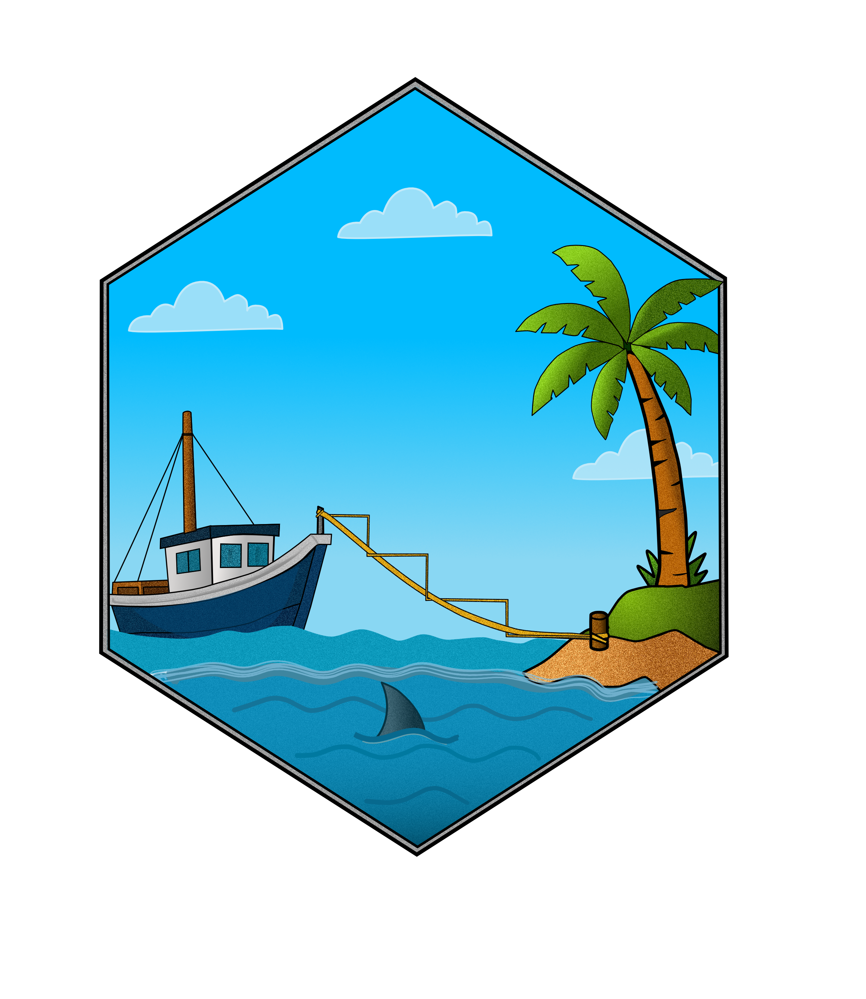

Variance-Covariance Matrix and Confidence Intervals for coxph_mpl Fits
vcov.coxph_mpl.RdExtract the estimated variance-covariance matrix of a fitted
coxph_mpl model, and the Wald confidence intervals that follow from
it.
Arguments
- object
A fitted model of class
"coxph_mpl".- parameters
Parameter block of interest:
"Beta"for the regression coefficients or"Theta"for the baseline hazard parameters. Default"Beta".- se
Inference method, matching the choices offered by [summary.coxph_mpl()] and [predict.coxph_mpl()]: one of
"M2QM2","M2HM2"or"H". Default"M2QM2".- ...
Additional arguments passed to methods.
- parm
Parameters to report an interval for, given as names or as indices into the selected block. Defaults to all of them.
- level
Confidence level. Default
0.95.
Value
vcov returns a symmetric matrix with one row and column per
parameter in the selected block. confint returns a matrix with two
columns giving the lower and upper limits.
Details
coxph_mpl estimates the regression coefficients
\(\boldsymbol\beta\) and the baseline hazard parameters
\(\boldsymbol\theta\) jointly, and stores the covariance of the whole
\((\boldsymbol\beta, \boldsymbol\theta)\) vector. vcov returns one
diagonal block of it, so vcov(fit) is the \(p \times p\) matrix a
reader of coef(fit) expects. The cross-block covariances between
\(\boldsymbol\beta\) and \(\boldsymbol\theta\) are not discarded, only
unreported here; they are available as fit$covar[[se]].
Rows and columns for baseline parameters that were driven to the boundary
(at or below min.theta, see [coxph_mpl.control()]) are zero, as are
all entries when the covariance could not be inverted; in the latter case
the matrix is filled with NA and the intervals follow suit.
confint forms symmetric Wald intervals on the scale the parameters
were estimated on, so for regression coefficients they are intervals for
\(\beta\), not for the hazard ratio; exponentiate to obtain the latter.